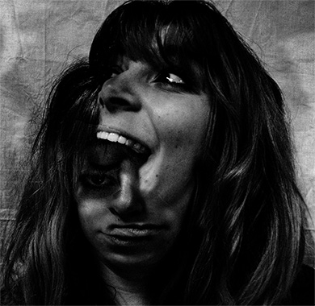
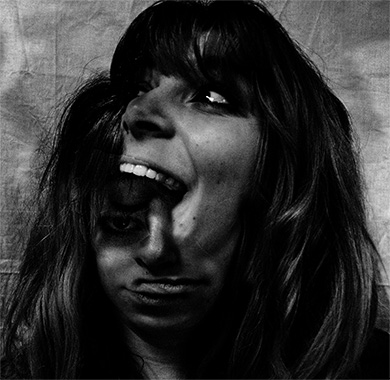

Bestiole, la cité des insectes
- Identité
Conception de l'identité de Bestiole, une structure zoologique consacrée à la découverte des insectes. Petits et grands sont invités à pénétrer au sein de son architecture grandiose qui miniaturise l'échelle humaine ; utilisation du motif de la fourmilière pour exprimer une idée d'immersion, de texture, de science. Que se passe-t-il au coeur de l'insecte ?
Utilisation de la fourmilière, une structure naturelle que petits et grands connaissent. Elle évoque l’immersion que nous propose la Cité des Insectes et possède une esthétique organique qui correspond à l’univers dans lequel on vient se plonger et son application sur la carapace du coléoptère n’est pas sans rappeler l’organisme fragile de l’insecte, protégé par l’exosquelette.


 
